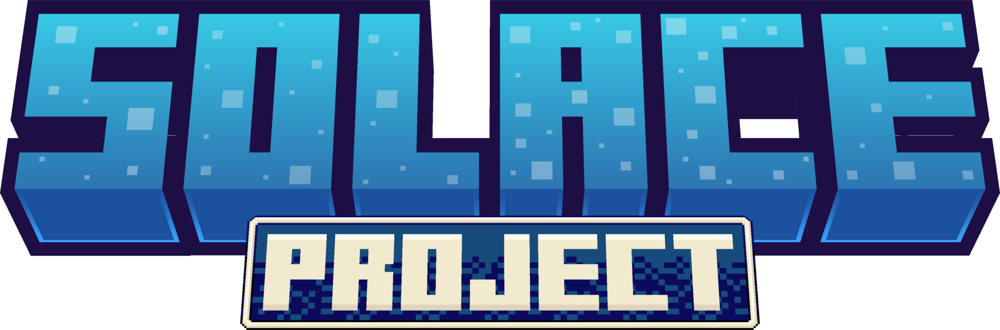

A fan-made, unofficial server replacement for Minecraft Earth
Minecraft Earth shut down in 2021 — but we brought it back. Solace is an unofficial server replacement for Minecraft Earth, based on Vienna. Most core gameplay already works, including the map, journal, activity log, inventory, crafting, smelting, boosts, tappables, buildplates, and the store, with features like challenges, seasons, and adventures still under active development. The project is still a work in progress, so expect bugs and breaking changes.
Getting set up means running a server on your PC and patching the Minecraft Earth client to point at it. The full walkthrough — requirements, finding your PC's IP, and step-by-step server and client instructions — lives in the Install Guide.
Full setup walkthrough for the server and client
These are installed automatically if you use the semi-automatic install method below.
You'll need this before you start, since both the server config and the client patcher point at it.
ipconfigip addresshostname -Iifconfig -aIt's usually, though not always, formatted like
192.168.XXX.XXX.
Open a terminal and run the matching one-liner, then wait for it to finish.
sudo curl -sSl https://raw.githubusercontent.com/Earth-Restored/Solace/main/install.sh | bashcurl -sSl https://raw.githubusercontent.com/Earth-Restored/Solace/main/install.sh | bashOnce it completes, pick up the Manual instructions below starting at server step 4.
git clone https://github.com/Earth-Restored/Solace.gitcd into the Solace directory and run the following, swapping
{os} for win, linux, or osx, and {arch} for x64, x86,
arm64, or arm32 (e.g. framework-dependent-win-x64).
publish.ps1 -profiles framework-dependent-{os}-{arch}run_launcher.ps1On the same device, open localhost:5000, register an account, and confirm your email from the page that opens before logging in. If you miss the confirmation step, you'll need to delete the account database and start over — see the project's README.
Under "Server Options," set Network/IPv4 Address to your PC's IP, then either disable Map/Enable Tile Rendering or add a Map/MapTiler API key (get one from your MapTiler account once logged in).
Under "Server Status," click Start.
Accept the Minecraft server's EULA when it's prompted in the launcher's logs.
Download and move the "resourcepack" file as described in the launcher's logs.
iOS players can try an unofficial patcher, though only the AltStore install method is expected to work reliably. On Android, choose between the two patchers below.
| Feature | Project Earth Patcher | MCE Patcher |
|---|---|---|
| Target device | Android | Android |
| Patcher runs on | Android | Windows, Linux, macOS |
| Login | Microsoft account only | Microsoft or custom |
| Shop | Needs a Microsoft account that played before shutdown | Always works with custom login |
Download and install the patcher on a device with a legal copy of
Minecraft Earth already installed. Open it, go to the 3-dot menu → Settings, and
under Locator Server enter http://{ip}:8080 (use your PC's IP or
hostname, and keep it as http:// not https://). Go back
and start patching, then open the newly patched app to play.
Download MCE Patcher (the UI build is recommended) or
build it from source. Acquire a Minecraft Earth APK, e.g. by dumping it from your
phone, then run the patcher and select the APK. Change the locator hostname/IP to
{ip}:8080 using your PC's IP or hostname — for non-Microsoft login,
adjust the login options accordingly (this is the default in Simple UI mode). Click
Patch, move the patched APK to your phone, install it, and you're ready to play.
You'll need the Minecraft 1.20.4 resource pack. The easiest way is to pull it
straight from the game's JAR: open 1.20.4.jar from your Minecraft
install folder in an archive tool like 7-Zip, then navigate to
assets/minecraft/.
Copy every folder from assets/minecraft/ and paste them into
staticdata/resourcepacks/java/minecraft/.
Turn on "Enable Buildplate Preview in Launcher" under Server Options → Data Handling.